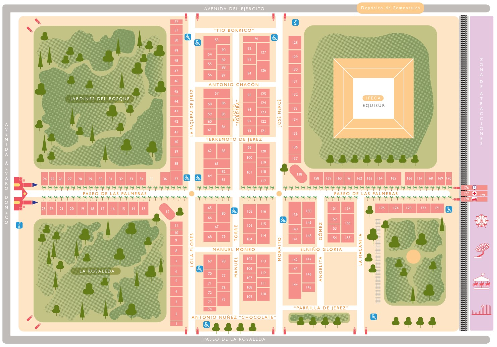

<div id="code_content">
    <br><map name="map">
    <br><area shape="rect" coords="815, 565, 850, 990" title="Moraito" />
    <br><area shape="rect" coords="815, 45, 850, 565" title="José Mercé" />
    <br><area shape="rect" coords="690, 80, 720, 565" title="M.Soria  'Sordera'" />
    <br><area shape="rect" coords="690, 565, 720, 960" title="Manuel Torre" />
    <br><area shape="rect" coords="550, 565, 590, 990" title="Lola Flores" />
    <br><area shape="rect" coords="550, 45, 590, 565" title="La Paquera de Jerez" />
    <br><area shape="rect" coords="1060, 565, 1090, 990" title="La Macanita" />
    <br><area shape="rect" coords="940, 565, 970, 930" title="Angelita Gómez" />
    <br><area shape="rect" coords="815, 910, 1080, 940" title="Parrilla de Jerez" />
    <br><area shape="rect" coords="815, 730, 1063, 760" title="Elniño Gloria" />
    <br><area shape="rect" coords="550, 940, 850, 970" title="Antonio Nuñez 'Chocolate'" />
    <br><area shape="rect" coords="550, 730, 850, 760" title="Manuel Moneo" />
    <br><area shape="rect" coords="5, 550, 1375, 580" title="Paseo de las Palmeras" />
    <br><area shape="rect" coords="550, 405, 850, 435" title="Terremoto de Jerez" />
    <br><area shape="rect" coords="550, 230, 850, 260" title="Antonio Chacón" />
    <br><area shape="rect" coords="550, 70, 850, 100" title="Tío Borrico" />
    <br><area shape="rect" coords="35, 525, 65, 625" title="Porton" />
    <br><area shape="rect" coords="5, 990, 1475, 1035" title="Paseo de la Rosaleda" />
    <br><area shape="rect" coords="5, 5, 35, 1035" title="Avenida Alvaro Domecq" />
    <br><area shape="rect" coords="5, 5, 1475, 35" title="Avenida del Ejército" />
    <br><area shape="rect" coords="1400, 40, 1470, 990" title="Atracciones" />
    <br><area shape="rect" coords="1379, 586, 1451, 603" title="178" />
    <br><area shape="rect" coords="1379, 569, 1450, 586" title="177" />
    <br><area shape="rect" coords="1377, 554, 1451, 569" title="176" />
    <br><area shape="rect" coords="1117, 606, 1160, 637" title="175 Soberano Poder" />
    <br><area shape="rect" coords="1160, 606, 1201, 636" title="174 La Tuya" />
    <br><area shape="rect" coords="1201, 607, 1239, 636" title="173 Producciones Del Motor" />
    <br><area shape="rect" coords="1239, 607, 1277, 634" title="172 Hermandad Cristo De La Sed" />
    <br><area shape="rect" coords="1279, 609, 1323, 634" title="171 La Flamenca" />
    <br><area shape="rect" coords="1328, 516, 1345, 553" title="170 Hdad. La Salvacion" />
    <br><area shape="rect" coords="1297, 516, 1328, 552" title="169 Hdad. La Salvacion" />
    <br><area shape="rect" coords="1265, 514, 1297, 551" title="168 Agden" />
    <br><area shape="rect" coords="1235, 515, 1265, 552" title="167 Hermandad La Paz De Fatima" />
    <br><area shape="rect" coords="1203, 515, 1235, 552" title="166 Prendimiento" />
    <br><area shape="rect" coords="1149, 512, 1194, 551" title="165 Las Viñas" />
    <br><area shape="rect" coords="1112, 514, 1149, 552" title="164 Hermandad De La Mision" />
    <br><area shape="rect" coords="1084, 514, 1112, 552" title="163 Entre Amigos" />
    <br><area shape="rect" coords="1055, 512, 1084, 551" title="162 Pozo De La Víbora" />
    <br><area shape="rect" coords="1025, 513, 1055, 553" title="161 Peña Los 13" />
    <br><area shape="rect" coords="997, 515, 1025, 553" title="160 Papanata" />
    <br><area shape="rect" coords="964, 515, 997, 554" title="159 Enjalma – La Papa Aliña" />
    <br><area shape="rect" coords="922, 513, 964, 554" title="158 Casa Juan Carlos" />
    <br><area shape="rect" coords="1020, 604, 1053, 637" title="157 Hermandad De Pasion" />
    <br><area shape="rect" coords="1022, 638, 1055, 692" title="156 Mamajuana / Contando Lunares" />
    <br><area shape="rect" coords="1022, 692, 1053, 722" title="155" />
    <br><area shape="rect" coords="978, 697, 1015, 726" title="154" />
    <br><area shape="rect" coords="979, 668, 1017, 696" title="153 La Vida Loca" />
    <br><area shape="rect" coords="979, 640, 1015, 669" title="152 La Favorita" />
    <br><area shape="rect" coords="979, 604, 1015, 640" title="151 Meson El Cartujano" />
    <br><area shape="rect" coords="905, 604, 939, 656" title="150 El Ermitaño De Paco" />
    <br><area shape="rect" coords="902, 656, 939, 682" title="149 El Surtidor" />
    <br><area shape="rect" coords="902, 682, 937, 726" title="148 Siete Del Siete" />
    <br><area shape="rect" coords="900, 762, 938, 790" title="147 Azucar Y Limon" />
    <br><area shape="rect" coords="900, 790, 938, 845" title="146 Miguel De Los Mayores" />
    <br><area shape="rect" coords="898, 845, 938, 873" title="145 Upacesur" />
    <br><area shape="rect" coords="860, 819, 898, 897" title="144 Los Mayores" />
    <br><area shape="rect" coords="860, 789, 900, 819" title="143 Clinica Balari" />
    <br><area shape="rect" coords="860, 763, 900, 789" title="142 La Farándula" />
    <br><area shape="rect" coords="860, 702, 900, 733" title="141 La Albarizuela" />
    <br><area shape="rect" coords="860, 672, 900, 702" title="140 Destino Jerez" />
    <br><area shape="rect" coords="860, 603, 900, 672" title="139 U.G.T. (Casa Del Pueblo)" />
    <br><area shape="rect" coords="860, 489, 919, 549" title="138 Templete Municipal" />
    <br><area shape="rect" coords="859, 465, 900, 487" title="137 Caseta Accesibilidad" />
    <br><area shape="rect" coords="860, 419, 900, 464" title="136 Díez-Merito" />
    <br><area shape="rect" coords="860, 381, 898, 419" title="135 Cayetano Del Pino" />
    <br><area shape="rect" coords="861, 336, 898, 381" title="134 Josefrans" />
    <br><area shape="rect" coords="861, 307, 897, 336" title="133 Los De Siempre" />
    <br><area shape="rect" coords="860, 264, 898, 308" title="132 Hermandad De La Entrega" />
    <br><area shape="rect" coords="860, 218, 898, 264" title="131 La Marimorena - Lolita" />
    <br><area shape="rect" coords="861, 190, 898, 218" title="130 La Dolores" />
    <br><area shape="rect" coords="859, 150, 899, 191" title="129 Asoc. Dep. Policia Local - Sherry Pol" />
    <br><area shape="rect" coords="859, 108, 896, 150" title="128 Jerelesgay" />
    <br><area shape="rect" coords="768, 129, 802, 181" title="127 El Abrevadero" />
    <br><area shape="rect" coords="767, 181, 802, 240" title="126 Xerez Deportivo Futbol Club" />
    <br><area shape="rect" coords="766, 262, 806, 294" title="125 Viloita Y Guillen" />
    <br><area shape="rect" coords="767, 294, 806, 321" title="124 El Viejo Simpecado" />
    <br><area shape="rect" coords="767, 321, 804, 347" title="123 Peña Taurina J.J. Padilla" />
    <br><area shape="rect" coords="763, 347, 804, 375" title="122 La Rumba" />
    <br><area shape="rect" coords="763, 375, 804, 402" title="121 Que Poderio" />
    <br><area shape="rect" coords="765, 426, 804, 474" title="120 El Cuadro" />
    <br><area shape="rect" coords="766, 474, 804, 499" title="119 Hermandad Nuestro Padre Jesus De La Salud" />
    <br><area shape="rect" coords="766, 499, 803, 526" title="118 La Lanzada" />
    <br><area shape="rect" coords="767, 526, 803, 555" title="117 C.G.T (Rincon Libertario)" />
    <br><area shape="rect" coords="766, 607, 803, 655" title="116 Carrefour" />
    <br><area shape="rect" coords="767, 655, 803, 686" title="115 El Tablao" />
    <br><area shape="rect" coords="767, 686, 802, 729" title="114 Usted Perdone" />
    <br><area shape="rect" coords="766, 763, 803, 801" title="113 Treinta Y Tantos" />
    <br><area shape="rect" coords="766, 801, 801, 832" title="112 La Tertulia" />
    <br><area shape="rect" coords="767, 832, 802, 858" title="111 Amigos De La Yeguada" />
    <br><area shape="rect" coords="765, 861, 803, 902" title="110 La Clemencia" />
    <br><area shape="rect" coords="723, 871, 761, 904" title="109 Covijerez" />
    <br><area shape="rect" coords="723, 847, 761, 871" title="108 Pueblo Saharaui" />
    <br><area shape="rect" coords="725, 817, 762, 846" title="107 Asoleo" />
    <br><area shape="rect" coords="725, 789, 763, 817" title="106 La Casapuerta" />
    <br><area shape="rect" coords="726, 763, 763, 789" title="105 Redencion Salesiana ''La Bofeta'" />
    <br><area shape="rect" coords="726, 700, 764, 731" title="104 7 Dias En La Gloria" />
    <br><area shape="rect" coords="725, 651, 762, 700" title="103 Consuelo Del Peliron" />
    <br><area shape="rect" coords="725, 610, 762, 651" title="102 La De En Medio" />
    <br><area shape="rect" coords="727, 482, 761, 557" title="101 Club Nazaret" />
    <br><area shape="rect" coords="727, 460, 762, 482" title="100 Primavera Trompetera" />
    <br><area shape="rect" coords="726, 431, 762, 457" title="99 P.S.O.E" />
    <br><area shape="rect" coords="724, 376, 762, 405" title="98 La Popular" />
    <br><area shape="rect" coords="723, 349, 762, 376" title="97 Cayetana" />
    <br><area shape="rect" coords="725, 305, 763, 348" title="96 Rincón Cherokee" />
    <br><area shape="rect" coords="727, 266, 763, 305" title="95 Coag Cadiz" />
    <br><area shape="rect" coords="724, 195, 764, 241" title="94 Bidafarma" />
    <br><area shape="rect" coords="726, 162, 764, 195" title="93 Sgs" />
    <br><area shape="rect" coords="726, 130, 764, 162" title="92 Gica" />
    <br><area shape="rect" coords="726, 108, 802, 128" title="91 Gloria Bendita" />
    <br><area shape="rect" coords="647, 134, 686, 162" title="90 Vors" />
    <br><area shape="rect" coords="649, 162, 686, 194" title="89 Rotary Club Jerez" />
    <br><area shape="rect" coords="649, 194, 686, 210" title="88 Sabor Tropical" />
    <br><area shape="rect" coords="647, 210, 686, 239" title="87 Los Andaluces" />
    <br><area shape="rect" coords="644, 295, 688, 325" title="86 La Manuela" />
    <br><area shape="rect" coords="647, 325, 688, 355" title="85 Amigos Del Quinto" />
    <br><area shape="rect" coords="647, 355, 685, 407" title="84 A.D.C. Piscinas El Almendral" />
    <br><area shape="rect" coords="647, 427, 682, 473" title="83 Frida" />
    <br><area shape="rect" coords="648, 507, 685, 520" title="82 Los Gallos" />
    <br><area shape="rect" coords="650, 520, 684, 551" title="81 La Amargura" />
    <br><area shape="rect" coords="645, 609, 683, 664" title="80 C.C.O.O." />
    <br><area shape="rect" coords="648, 696, 682, 720" title="79 La Bota De Roble" />
    <br><area shape="rect" coords="646, 761, 686, 806" title="78 Los Cernícalos" />
    <br><area shape="rect" coords="651, 806, 686, 844" title="77 Bondad Y Misericordia" />
    <br><area shape="rect" coords="651, 844, 684, 874" title="76 Los Ligones" />
    <br><area shape="rect" coords="650, 875, 685, 913" title="75 Casa De Extremadura" />
    <br><area shape="rect" coords="604, 916, 647, 932" title="74 La Paquera" />
    <br><area shape="rect" coords="605, 891, 647, 916" title="73 La Veracruz" />
    <br><area shape="rect" coords="605, 864, 647, 891" title="72 Medio Tapon" />
    <br><area shape="rect" coords="606, 834, 647, 864" title="71 Sociedad Jerezana Del Vino" />
    <br><area shape="rect" coords="606, 805, 647, 834" title="70 Jerez Londres" />
    <br><area shape="rect" coords="606, 761, 647, 805" title="69 Endesa" />
    <br><area shape="rect" coords="603, 694, 646, 722" title="68 El Colegio De Abogados" />
    <br><area shape="rect" coords="607, 664, 685, 694" title="67 Buena Gente" />
    <br><area shape="rect" coords="607, 635, 644, 664" title="66 Los Pollitos" />
    <br><area shape="rect" coords="607, 608, 644, 635" title="65 Hermandad Del Rocio" />
    <br><area shape="rect" coords="605, 505, 645, 555" title="64 Asociacion Sagrada Familia" />
    <br><area shape="rect" coords="605, 475, 683, 505" title="63 Casino Jerezano" />
    <br><area shape="rect" coords="604, 429, 645, 475" title="62 Bodegas Fundador" />
    <br><area shape="rect" coords="606, 374, 645, 403" title="61 Alboroto" />
    <br><area shape="rect" coords="606, 353, 645, 373" title="60 Ateneo De Jerez - Puerta Abierta" />
    <br><area shape="rect" coords="605, 324, 645, 354" title="59 La Cantarera" />
    <br><area shape="rect" coords="606, 294, 645, 324" title="58 Vinolento" />
    <br><area shape="rect" coords="606, 264, 684, 294" title="57 Real Circulo Lebrero" />
    <br><area shape="rect" coords="605, 208, 644, 238" title="56 Peña La Buleria" />
    <br><area shape="rect" coords="607, 178, 647, 207" title="55 Cascabeles" />
    <br><area shape="rect" coords="606, 145, 647, 178" title="54 El Enganche" />
    <br><area shape="rect" coords="605, 107, 687, 142" title="53 Casino Nacional" />;
    <br><area shape="rect" coords="504, 56, 543, 73" title="52 Peña Casi Treinta" />
    <br><area shape="rect" coords="504, 73, 543, 105" title="51 Afanas" />
    <br><area shape="rect" coords="504, 105, 543, 135" title="50 La Montería" />
    <br><area shape="rect" coords="504, 135, 543, 166" title="49 Cristo De La Viga" />
    <br><area shape="rect" coords="504, 166, 544, 197" title="48 Cache" />
    <br><area shape="rect" coords="507, 196, 544, 226" title="47 Círculo De Labradores" />
    <br><area shape="rect" coords="507, 225, 544, 257" title="46 La Reunión" />
    <br><area shape="rect" coords="509, 258, 544, 286" title="45 Cristo De La Expiracion" />
    <br><area shape="rect" coords="509, 286, 543, 317" title="44 Hdad. Del Transporte" />
    <br><area shape="rect" coords="510, 317, 543, 347" title="43 La Yedra" />
    <br><area shape="rect" coords="510, 346, 543, 377" title="42 La Candelaria" />
    <br><area shape="rect" coords="510, 380, 543, 409" title="41 Al Relente" />
    <br><area shape="rect" coords="510, 409, 544, 440" title="40 El Farol" />
    <br><area shape="rect" coords="510, 440, 545, 466" title="39 Gaboral" />
    <br><area shape="rect" coords="510, 466, 543, 510" title="38 Radio Jerez" />
    <br><area shape="rect" coords="509, 511, 544, 555" title="37 Geci-Grupo Empresas El Corteingles" />
    <br><area shape="rect" coords="479, 511, 508, 553" title="36 Camino Del Rocio" />
    <br><area shape="rect" coords="434, 513, 475, 554" title="35 La Soledad" />
    <br><area shape="rect" coords="408, 511, 434, 555" title="34 Los Caireles" />
    <br><area shape="rect" coords="373, 514, 404, 555" title="33 Canal Sur -La Moderna" />
    <br><area shape="rect" coords="342, 513, 375, 555" title="32 Peña Los 100" />
    <br><area shape="rect" coords="313, 513, 343, 554" title="31 Judios San Mateos" />
    <br><area shape="rect" coords="283, 514, 313, 554" title="30 El Carril" />
    <br><area shape="rect" coords="253, 514, 283, 555" title="29 Entre Olivos" />
    <br><area shape="rect" coords="222, 512, 253, 555" title="28 Borboreo" />
    <br><area shape="rect" coords="192, 512, 222, 554" title="27 Del Amor" />
    <br><area shape="rect" coords="168, 513, 192, 554" title="26 La Gañanía" />
    <br><area shape="rect" coords="145, 513, 168, 554" title="25 Vara Y Pulgar" />
    <br><area shape="rect" coords="122, 512, 145, 553" title="24 El Trasiego" />
    <br><area shape="rect" coords="121, 602, 139, 645" title="23 La Nuestra" />
    <br><area shape="rect" coords="139, 602, 168, 644" title="22 El Seis Doble" />
    <br><area shape="rect" coords="168, 602, 200, 644" title="21 Las Angustias" />
    <br><area shape="rect" coords="200, 602, 230, 643" title="20 Diario De Jerez" />
    <br><area shape="rect" coords="230, 602, 261, 643" title="19 Gemelas Al Jerez" />
    <br><area shape="rect" coords="261, 602, 291, 643" title="18 La Térnica" />
    <br><area shape="rect" coords="291, 604, 321, 643" title="17 Las Duelas" />
    <br><area shape="rect" coords="321, 604, 352, 642" title="16 La Borriquita" />
    <br><area shape="rect" coords="352, 605, 382, 642" title="15 Peña Los 20" />
    <br><area shape="rect" coords="382, 605, 412, 642" title="14 Peña Amigos Del Cañizo" />
    <br><area shape="rect" coords="412, 603, 440, 642" title="13 Amigos Del Canasta" />
    <br><area shape="rect" coords="474, 605, 523, 659" title="12 González Byass" />
    <br><area shape="rect" coords="507, 663, 543, 689" title="11 La Penúltima" />
    <br><area shape="rect" coords="507, 689, 542, 705" title="10 Peña Rociera Los Romeritos" />
    <br><area shape="rect" coords="507, 705, 542, 735" title="9 Amigos En Jerez" />
    <br><area shape="rect" coords="507, 735, 543, 766" title="8 Nazarenos" />
    <br><area shape="rect" coords="507, 766, 543, 797" title="7 La Catorce" />
    <br><area shape="rect" coords="507, 796, 542, 826" title="6 Amigos Del Patio" />
    <br><area shape="rect" coords="507, 827, 542, 852" title="5 La Crujia" />
    <br><area shape="rect" coords="506, 855, 543, 884" title="4 Los Cabales" />
    <br><area shape="rect" coords="506, 887, 545, 917" title="3 Tio Jose De Paula" />
    <br><area shape="rect" coords="507, 918, 544, 961" title="2 La Ventana" />
    <br><area shape="rect" coords="504, 963, 543, 975" title="1 La Primera" />
    <br></map>
    </div>
